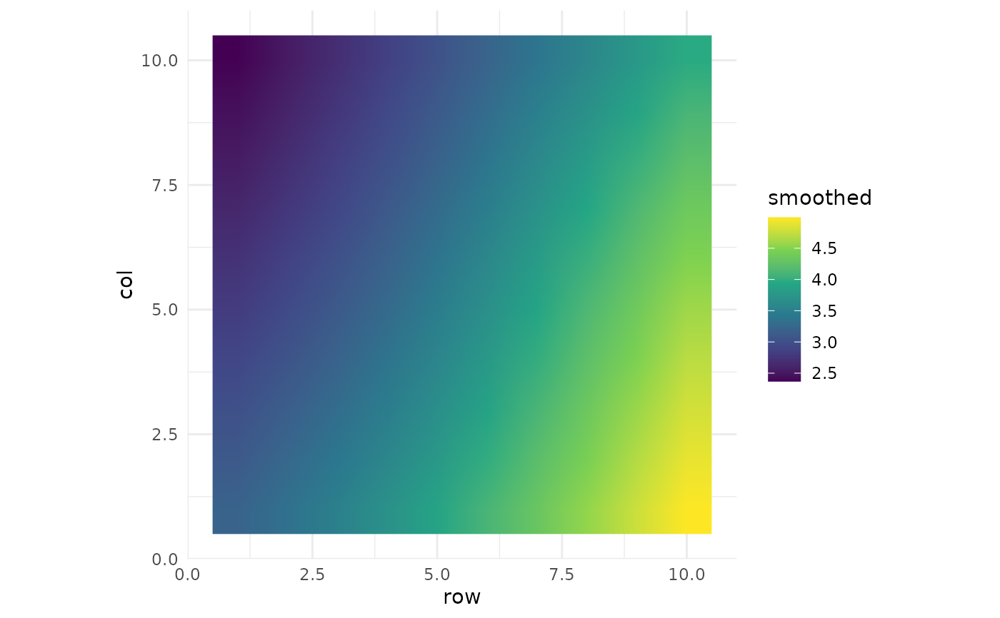

Renders the point-support prediction from gp_field_smooth() as a raster of
the smoothed trait over the row-column plane. The colour scale is the
colourblind-safe viridis option. Requires the optional ggplot2 package and
the two coordinate columns to be present in the prediction locations.
Arguments
- prediction
A point-support
gpfield_prediction, or thegpfield_smoothobject returned bygp_field_smooth().- row, col
Character scalars naming the coordinate columns in the prediction locations (default
"row"and"col").
Examples
set.seed(1L)
field <- expand.grid(row = seq_len(10L), col = seq_len(10L))
field$yield <- 3 + 0.2 * field$row - 0.1 * field$col +
stats::rnorm(nrow(field), 0, 0.3)
sm <- gp_field_smooth(field, response = "yield", seed = 1L)
gp_field_plot(sm)
